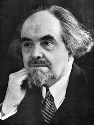

Спиноза және Детерминизм: Ұғынылған Қажеттілік
Еркіндік философиясы – этикалық таңдаудың іргетасы. Адам тек еркін болғанда ғана оның әрекетіне моральдық баға беруге болады. Алайда, «еркіндік» дегеніміз не? Бұл сұрақ философия тарихындағы ең күрделі мәселелердің бірі – детерминизм (барлық оқиғалардың себеп-салдарлық байланыспен алдын ала анықталуы) мен ерік бостандығының антиномиясын тудырды.
Егер әлем толық детерминистік заңдарға бағынса, онда адамның таңдау еркіндігі – тек иллюзия ма? Бұл мәселеге Бенедикт Спиноза ерекше жауап берді. Ол өзінің қатаң детерминистік философиясы (монизм) шеңберінде еркіндікке орын тапты.

"Спиноза үшін еркіндік – бұл қажеттіліктің болмауы емес, керісінше, «еркіндік – ұғынылған қажеттілік»."
Оның ойынша, адам табиғаттың бір бөлігі және сол заңдарға бағынады. Адамның еркін болмауы (құлдығы) – оның өз табиғатын түсінбеуінен, аффектілерге (құмарлық, қорқыныш, ашу) бой алдыруынан туындайды. Ал адам өз ақыл-ойы арқылы осы заңдылықтарды, өз табиғатын және аффектілерінің себептерін ұғынғанда, ол сыртқы күштердің құлы болудан қалады да, сол заңдылықтарға сәйкес саналы түрде әрекет ете бастайды. Бұл – ақыл-ой арқылы қол жеткізілетін ең жоғарғы бостандық.
Экзистенциализмдегі Еркіндік: Болмыс және Таңдау
ХХ ғасырда еркіндік мәселесі экзистенциализм философиясында жаңа, түбегейлі мағынаға ие болды. Экзистенциалистер үшін еркіндік – бұл адамның таңдауы ғана емес, оның болмысының өзі, оның тағдыры.
Жан-Поль Сартр
Сартр үшін еркіндік абсолютті: «Тіршілік мәннен бұрын келеді». Адам өз әрекеттерімен өзінің «мәнін» қалыптастырады және «бостандыққа үкім етілген», абсолютті жауапкершілікке ие.

Альберт Камю
Камю еркіндікті абсурд арқылы қарастырады. Өмірдің мәнсіздігін мойындау адамды үмітсіздікке емес, керісінше, тағдырға қарсы «бас көтеру» арқылы бостандыққа жетелейді.

Николай Бердяев
Бердяев еркіндіктің иерархиясын көрсетеді: төменгі (формалды таңдау) және жоғарғы (шығармашылық, ізгіліктегі) еркіндік. Жоғарғы еркіндікке өту – адамның мақсаты.
Еркіндіктің Өлшемдері: Оң және Теріс Бостандық
Әлеуметтік-саяси философияда еркіндік ұғымы екі негізгі модель арқылы талданады, бұл оның әртүрлі формаларын ажыратуға мүмкіндік береді.
«Теріс еркіндік» (Negative Freedom)
Бұл «...-дан бостандық» (freedom from). Адамның әрекетіне сыртқы кедергілердің, мәжбүрлеудің, басқа адамдардың немесе мемлекеттің араласуының болмауын білдіреді. Классикалық либерализмнің негізі.
«Оң еркіндік» (Positive Freedom)
Бұл «...-үшін бостандық» (freedom to). Адамның өз мақсаттарына жету, өз потенциалын жүзеге асыру, өзін-өзі басқару қабілеті мен мүмкіндігінің болуын талап етеді. Әлеуметтік құқықтармен (білім, денсаулық) байланысты.
Еркіндіктің Саяси-Әлеуметтік Формалары:
- Саяси бостандық: Мемлекетті басқаруға қатысу, үкіметтің әрекетін сынау құқығы.
- Ұлттық бостандық (Тәуелсіздік): Ұлттың өз тағдырын өзі анықтау, дербес мемлекет құру құқығы.
- Жеке бостандық: Адамның табиғи құқықтарымен (өмір сүру, жеке бас бостандығы) қорғалған өмір саласы.
- Сөз және сөз бостандығы: Өз пікірін, ақпаратты еркін айту, тарату және алу құқығы.
Қазақ Философиясындағы Еркіндік: Абай және Алаш
Қазақ философиясында еркіндік мәселесі жеке тұлғаның рухани кемелденуі және ұлт-азаттық күресі арқылы қарастырылды.
Абай Құнанбайұлының «Толық Адам»
Абай үшін нағыз еркіндік – бұл саяси немесе сыртқы бостандық қана емес, ең алдымен, адамның ішкі рухани еркіндігі. «Толық адам» – бұл ақыл, қайрат, жүректі тең ұстаған, нәпсінің құлдығынан арылған тұлға. Бұл – шынайы «адам болу» (ізгілікке жету) еркіндігі.
Алаш Қайраткерлері және Ұлттық Бостандық
ХХ ғасыр басындағы Алаш қайраткерлерінің философиясы «теріс» және саяси еркіндікке бағытталды. Олар үшін бірінші кезектегі мақсат – ұлттық бостандық (тәуелсіздік) болды, отаршылдық саясаттан арылуды көздеді.
Алаш ойшылдары үшін ұлттық тәуелсіздік – қазақ халқының Абай армандаған «толық адам» деңгейіне жетуі үшін қажетті алғышарт болды.
Осылайша, Абайдың рухани еркіндігі мен Алаштың саяси бостандық идеялары бір-бірін толықтыратын, қазақ философиясындағы еркіндік туралы біртұтас ілімді құрайды.
ҚОРЫТЫНДЫ: Еркіндік пен Этиканың Диалектикасы
Этикасыз еркіндік – анархия мен абсурдқа, ал еркіндіксіз этика – құлдық пен конформизмге алып келеді. Адамның кемелденуі осы екі ұғымның диалектикалық бірлігінде жатыр.
Бұл синтез қазақ философиясында айқын көрініс табады: Алаш қайраткерлерінің ұлттық, саяси еркіндік үшін күресі мен Абайдың «толық адам» тұжырымдамасындағы ішкі, рухани, этикалық кемелдену идеялары бір-бірін толықтырады. Қазіргі Қазақстанның «Рухани жаңғыру» философиясы – осы құндылықтарды ұштастыра отырып, жауапкершілігі жоғары, рухани еркін қоғам құруды мақсат етеді.